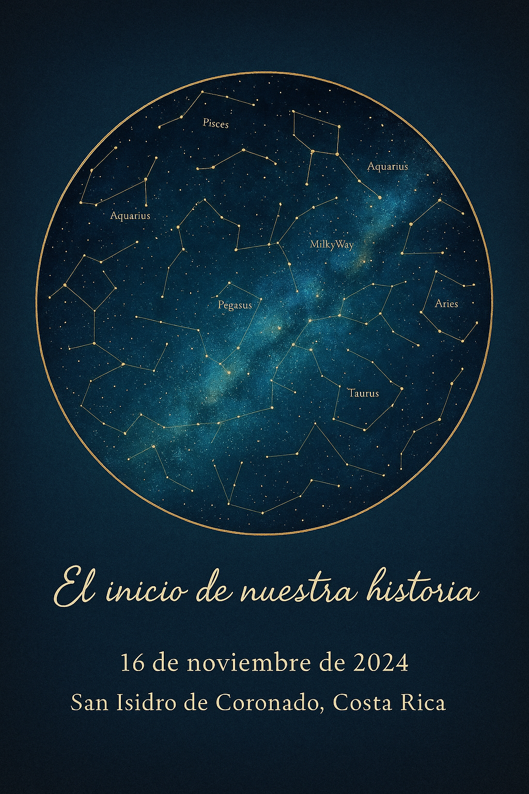

Nuestro Pedacito de Universo
Dayan & Daniel – Desde aquel instante, el cielo empezó a escribirnos. 🌿
El cielo exactamente como nos miraba aquel 16 de noviembre, 2024 – 10:00 pm, San Isidro Coronado. 🌟
El Inicio de Nuestra Historia
Aquel día no fue un día cualquiera. Fue el tipo de día en que el universo acomoda todo en silencio, solo para que dos almas que no se conocían… por fin se encontraran.

Aquí irá tu foto personal #1 💚
Momentos Que Se Volvieron Hogar
Desde nuestras risas espontáneas hasta las conversaciones que se sienten eternas, contigo siempre fue fácil, natural, mágico.

Aquí irá tu foto personal #2 💚
Lo Que Construimos
Aprendimos, crecimos, nos acompañamos. Y en medio de todo eso… nos elegimos. Eres mi tranquilidad, mi sonrisa y mi historia favorita.

Aquí irá tu foto personal #3 💚
Nuestras Aventuras Juntos
Cada salida, cada viaje, cada risa compartida… son capítulos de nuestra historia que atesoro. Contigo, el mundo se siente más vivo y lleno de posibilidades.

Aquí irá tu foto personal #4 💚
El Futuro Que Soñamos
Mirando hacia adelante, veo infinitas noches bajo las estrellas, abrazos eternos y sueños cumplidos. Tú eres mi compañero en este viaje, mi amor eterno.

Aquí irá tu foto personal #5 💚
Para Vos
Gracias por existir. Gracias por coincidir conmigo. Este es nuestro cielo, nuestra historia… y apenas el inicio. 🌿